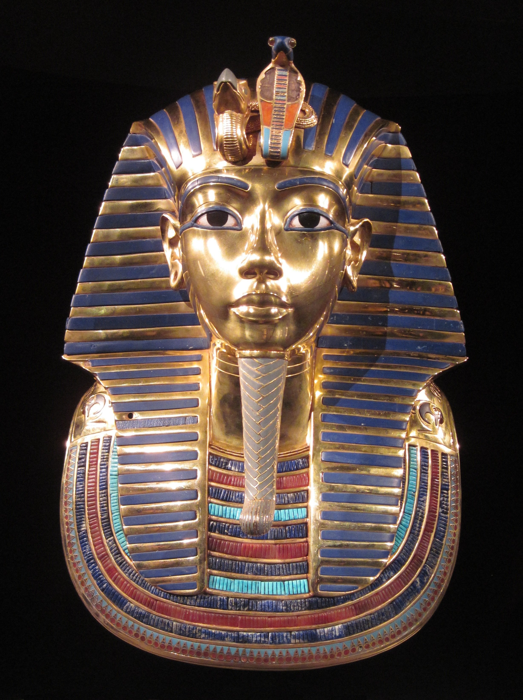

New Kingdom

The Middle Kingdom was a time of great prosperity. It consists of the Eleventh to Thirteenth Dynasties. Although the Eleventh Dynasty had its origins in the First Intermediate Period, it is a later king in this same royal family who reunified Egypt, thus initiating the Middle Kingdom. This king was Nebhepetre Mentuhotep (c.2055–2004 BC). The Eleventh Dynasty came from Thebes (modern Luxor) which, although hitherto an unimportant city, would become one of the most prominent throughout the rest of ancient Egyptian history. One of the main gods of Thebes, Amun, had similarly had a minor role in ancient Egyptian religion, but he quickly rose to prominence in step with his city, eventually gaining the adjective “King of the Gods”. The oldest evidence for his main place of worship, Karnak Temple, dates to the Middle Kingdom, and it would become the largest and wealthiest ancient Egyptian religious establishment by the end of the New Kingdom.
Due to his Theban origins, Nebhepetre Mentuhotep was buried across the Nile from Thebes, on the west bank, in Deir al-Bahari. His monument was, in addition to being a tomb, also the temple for his mortuary cult. Partially cut into the cliff face and partially a free-standing structure, with its terrace set on a raised platform that is accessed by a central rising ramp, it is clear that this structure served as a partial inspiration for its more famous neighbor, the temple of Hatshepsut, which lies immediately to its left.

The Middle Kingdom was a time of great prosperity. It consists of the Eleventh to Thirteenth Dynasties. Although the Eleventh Dynasty had its origins in the First Intermediate Period, it is a later king in this same royal family who reunified Egypt, thus initiating the Middle Kingdom. This king was Nebhepetre Mentuhotep (c.2055–2004 BC). The Eleventh Dynasty came from Thebes (modern Luxor) which, although hitherto an unimportant city, would become one of the most prominent throughout the rest of ancient Egyptian history. One of the main gods of Thebes, Amun, had similarly had a minor role in ancient Egyptian religion, but he quickly rose to prominence in step with his city, eventually gaining the adjective “King of the Gods”. The oldest evidence for his main place of worship, Karnak Temple, dates to the Middle Kingdom, and it would become the largest and wealthiest ancient Egyptian religious establishment by the end of the New Kingdom.
Due to his Theban origins, Nebhepetre Mentuhotep was buried across the Nile from Thebes, on the west bank, in Deir al-Bahari. His monument was, in addition to being a tomb, also the temple for his mortuary cult. Partially cut into the cliff face and partially a free-standing structure, with its terrace set on a raised platform that is accessed by a central rising ramp, it is clear that this structure served as a partial inspiration for its more famous neighbor, the temple of Hatshepsut, which lies immediately to its left.
Very little is known about Mentuhotep III and Mentuhotep IV, who were the last rulers of the Eleventh Dynasty. The first king of the Twelfth Dynasty (c.1985–1795 BC) was Amenemhat I (c.1985–1955 BC), who may have been the vizier of Mentuhotep IV. The immensely successful kings of this dynasty consolidated the power of the central government over the whole of Egypt, and it was during this time that the might of the powerful provincial rulers was curbed. They undertook construction projects across Egypt, strengthened its borders, sent mining expeditions, and encouraged trade. A series of forts, such as those at Buhen, Semna, and Askut not only served as defensive forts, guarding Egypt’s border, but regulated Nubian traders coming through, and served as the base for mining and military operations. The reigns of Kings Senusret III (c.1874–1855 BC) and Amenemhat III (c.1855–1808 BC) were particularly prosperous.